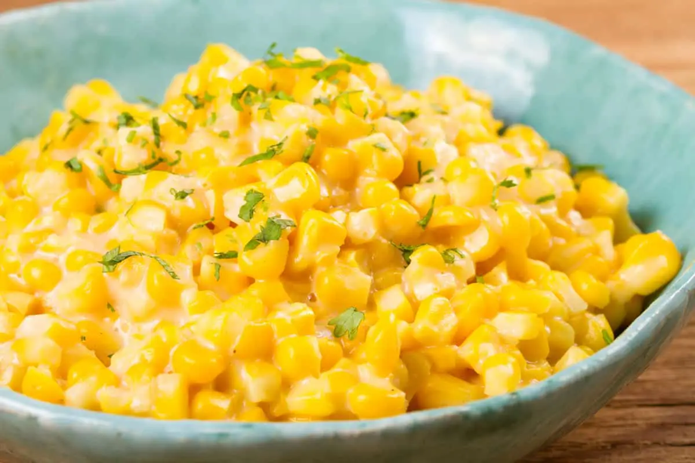

home
Corn with Jalapenos

Description:
Creamy jalapeño corn is an easy homemade side dish for your next barbecue or weeknight meal. Corn and diced
jalapeños are cooked on the stove top and coated in a creamy, flavorful sauce.
Ingredients
- 6 ears fresh corn, kernels cut from cob
- 2 fresh jalapeno peppers, seeded and diced
- ⅓ cup diced onion
- 2 tablespoons chopped pimento peppers
- 2 tablespoons butter, cut into pieces
- salt and ground black pepper to taste
Steps
-
Combine corn, jalapenos, onion, pimentos, and butter in microwave safe bowl. Cover, and cook in the microwave
on 100% power until heated through, about 4 minutes depending on your microwave. Stir every minute. Serve hot.